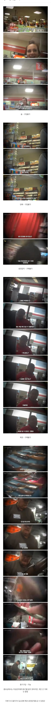

미국에서 미성년자가 살수 있는 물건
댓글
상대방도 총이 있으니까요
느리게 뽑는 쪽이 돈을 줘야됩니다
서부극이냐고
술, 담배, 복권, 성인잡지 구입 X 약탈 O
막줄 ㅋㅋㅋㅋㅋㅋ
난 미국 형사물에 나오는 고스트건이 그냥 총기번호 갈아낸것만 있는 줄 알았는데
그게 아니고 하부 따로 리시버 따로 상부 따로 이런식으로 조립하면 그냥 고스트건 된다면서?
총기박람회에서 개인간 거래하면 ㄹㅇ 신분증 필요도 없다는거 보고
이새끼들 총기 규제 빡센 주라도 그냥 조때로조때로 열매구나 싶었음
투투피가 총이유?잘 맞아야 찰과상이지
총이 있으면 공짜인데 왜 돈을 주고 사죠?